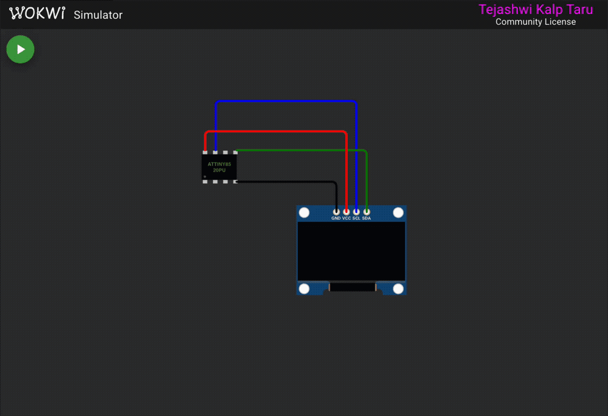
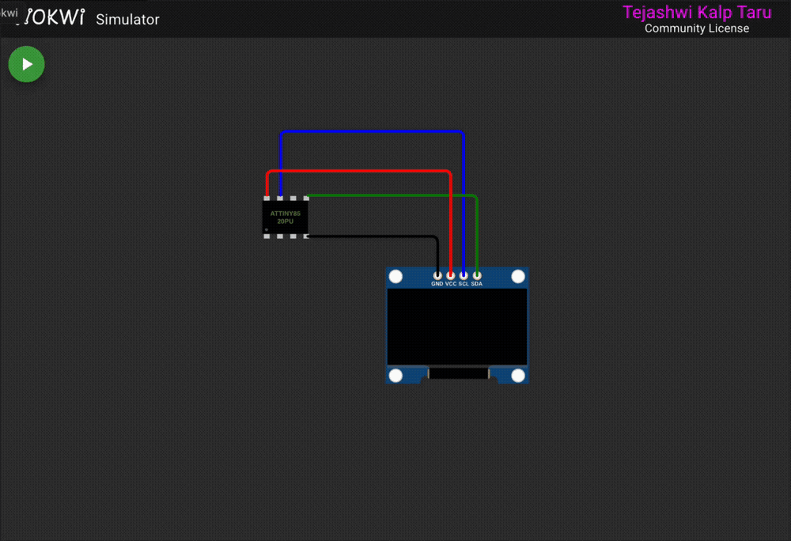
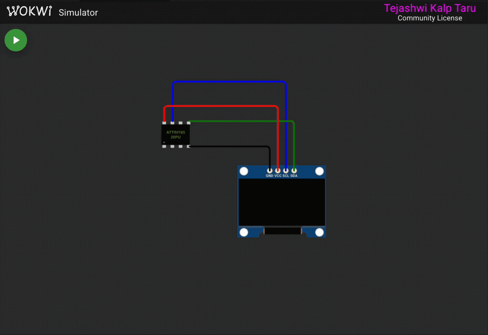
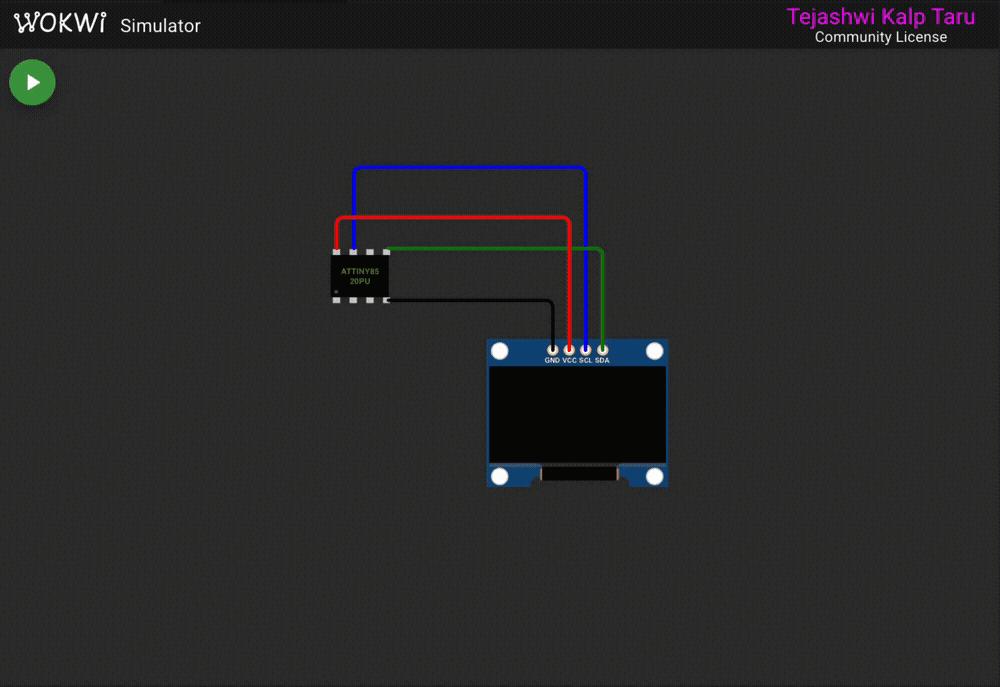
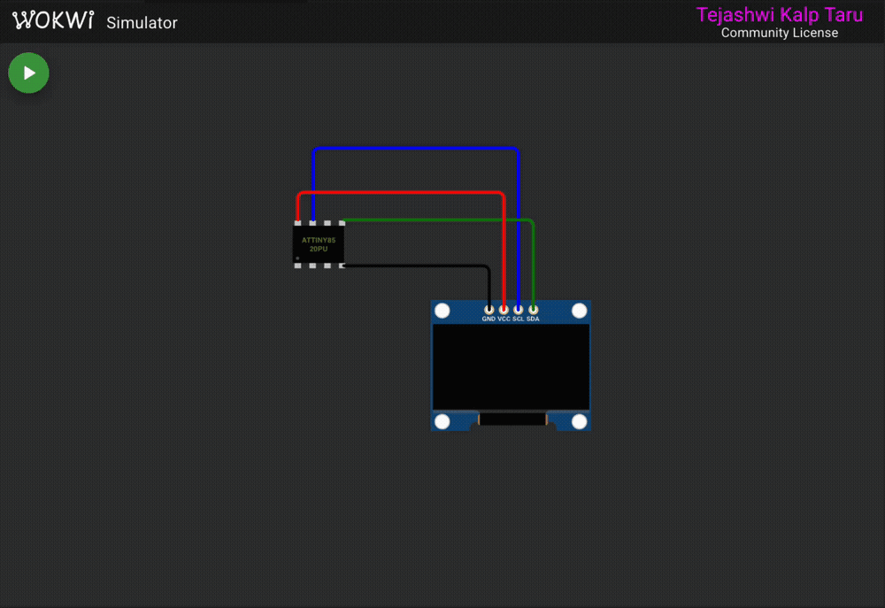

- Generated by
 1.9.8
1.9.8
|
ssd1306xled 1.0.0
SSD1306/SSD1315/SSH1106 OLED driver for ATtiny85
|
The demo sketch in examples/OLED_demo/ runs through the main library features. Each section is labeled on-screen so you can tell what's happening.

Waits 40 ms for the display to power up, then sends the initialization sequence and clears the screen.
Each byte in the display controls 8 vertical pixels (bit 0 = top, bit 7 = bottom). Filling with 0x00 leaves the screen blank. Filling with 0x01 lights the top pixel of every 8-pixel page strip, producing a thin horizontal line every 8 rows. The loop runs through patterns 0-7, so you see a single line stepping down one pixel at a time within each page.
Prints a label at the top and the library name in the middle of the screen using the 6x8 font. Each character is 6 pixels wide, so 11 characters take 66 of the 128 columns.
An "Image demo" label appears briefly, then two full-screen bitmaps are drawn one after the other.
Each bitmap is a PROGMEM array of 1024 bytes (128 columns x 8 pages). The coordinates (0, 0, 128, 8) cover all 128 columns across all 8 pages. The first bitmap comes from image.h, the second from image_two.h.
Two 8x8 sprites are defined: a hollow rectangle and a solid block.
Sprite A sits at Y=20 (pages 2-3) and sprite B at Y=28 (pages 3-4). Both touch page 3.
Without compositing – the demo first draws both sprites with plain ssd1306_draw_bmp_px(). The second draw overwrites the first on page 3, so one sprite's contribution to that page disappears. You can see the broken result on-screen for a few seconds.
With compositing – the demo then redraws using the compositing functions. Non-shared pages are drawn normally. The shared page is built in a buffer:
Both sprites' bits for page 3 are OR'd into the buffer, then sent in one write. Both sprites appear correctly this time.
This example reproduces the bug reported in issue #19 – sprite flicker when two rows of sprites sit close together on the Y axis – and shows how v1.0.0's compositing and clipping fix it.

You can run it in the Wokwi simulator without any hardware. See the Wokwi simulation page for setup instructions.
The SSD1306 splits its 64-pixel height into eight 8-pixel pages. Each byte you write controls one column of a page. I2C is write-only, so there is no way to read existing pixels back before writing new ones. If two sprites touch the same page, the second write erases the first.
In this example, two rows of 16x8 invader sprites sit at Y=19 and Y=28. Y=19 spans pages 2-3 and Y=28 spans pages 3-4. Both touch page 3, so the second row's write to page 3 wipes out the first row's pixels there.
The screen shows "BUG: flicker" and you can see the bottom edge of the top row is missing – that is the data the second row overwrote on page 3.
The fix is a three-step process for each column group where sprites share a page:
The buffer only needs to be as wide as the widest column span that overlaps. Here both sprites are 16 pixels wide at the same X, so 16 bytes. See Compositing – flicker-free overlapping sprites for more detail on the API.
The same issue report mentioned a sprite jump when entering from off-screen. If X is negative, ssd1306_draw_bmp_px() wraps around because X is unsigned. The _clipped variants accept signed X and clip columns that fall outside 0-127.
The saucer slides in from the left edge, partially visible at first, then fully on-screen. No jump, no wrap-around. See Clipping – signed X coordinates for the API details.
A user building a Space Invaders game on the ATtiny85 ran into two problems and reported them in issue #19.

This example pulls their actual sprite data and recreates both bugs on screen, then fixes them. It walks through four scenes that loop:
The sprites in sprites.h come straight from the reporter's code – two invader types with animation frames, a saucer, a turret, and an explosion.
Five type-1 invaders at Y=19 and five type-2 invaders at Y=28. Both rows touch page 3 (rows 24-31). When the second row draws to page 3, it overwrites the first row's pixels there. The bottom edge of the top row disappears.
Draw both rows normally first – that gets pages 2 and 4 right. Then fix page 3 by compositing both rows into a buffer and sending it once:
Both rows show up cleanly. Page 3 now has the OR of both sprites' bits instead of just the last one written.
The reporter's saucer started at X=-16 to slide in from the left edge. ssd1306_draw_bmp_px takes an unsigned X, so negative values wrap to large positive ones and the sprite jumps across the screen. The _clipped variant accepts signed X and clips columns outside 0-127:
The saucer enters gradually from off-screen. No jump.
The last scene ties it all together. A turret at the bottom of the screen shoots three invaders in the second row, one at a time. A bullet sprite travels upward from the turret to the target. On hit, the invader is replaced with an explosion sprite that flashes three times.
The tricky part: the explosion happens on row 2 (Y=28), which shares page 3 with row 1 (Y=19). Without compositing, the explosion would erase row 1's pixels on that page. The demo recomposites page 3 on every explosion frame so the top row stays intact while the blast animates below it:
After the explosion finishes, page 3 is recomposited one more time with just row 1, leaving the destroyed invader's slot empty.
Run it in the simulator with make build EXAMPLE=invaders_fix. See the Wokwi simulation page for setup.
Three ATtiny85 games by Daniel Champagne ship as examples. They were originally written for ssd1306xled v0.0.1 and use only the low-level byte transmission functions (ssd1306_send_command, ssd1306_send_byte, ssd1306_send_data_start/stop), so they work on v1.0.0 without changes.
All three need a potentiometer on A3 for movement and a button on PB1 for action. A piezo buzzer on PB4 handles sound. In the Wokwi simulator they run without controls and show their title screens or idle behavior.
Source code and GPLv3 license: Daniel Champagne's Arduino collection

A platformer with 10 levels. Collect keys to open the exit door, avoid spikes, and jump between platforms. The player has a 3-frame walking animation and the camera scrolls to follow movement. Uses 98.5% of the ATtiny85's 8 KB flash and 73% of its 512 bytes of RAM.

A Space Invaders clone with 9 difficulty levels, 6 destructible shields, and a bonus UFO. Four rows of six aliens march across the screen, descend, and fire back. Shooting the UFO earns an extra life. Uses 98.1% flash.
A Bomberman-style game with 3 levels. Drop bombs to destroy blocks and four enemies that wander the grid. Bombs explode after a timer, and the blast can chain through destructible terrain. Uses 96.5% flash.
Plays the opening of Beethoven's Fur Elise on a piezo buzzer connected to PB4 while showing the current note on the SSD1306 display. The melody is stored in PROGMEM as note-duration pairs.
The screen shows three things at once:
Sound is generated by toggling PB4 at the target frequency, the same approach the game examples use. The buzzer in the Wokwi diagram picks it up directly.
Uses 30% flash and 9% RAM – plenty of room to add more songs.
Bitmap data for the SSD1306 is organized page-by-page, left to right, top to bottom. Each byte represents 8 vertical pixels in one column (LSB = top).
You can create bitmap data using tools like:
Make sure to select "vertical" byte orientation with LSB at top, and store the result as a PROGMEM array.